Префектура Гумма · Наганохара · кемпинг
Кемпинг у станции Кавараю-онсэн: палатка у озера Ямба, баня на дровах и свой онсэн
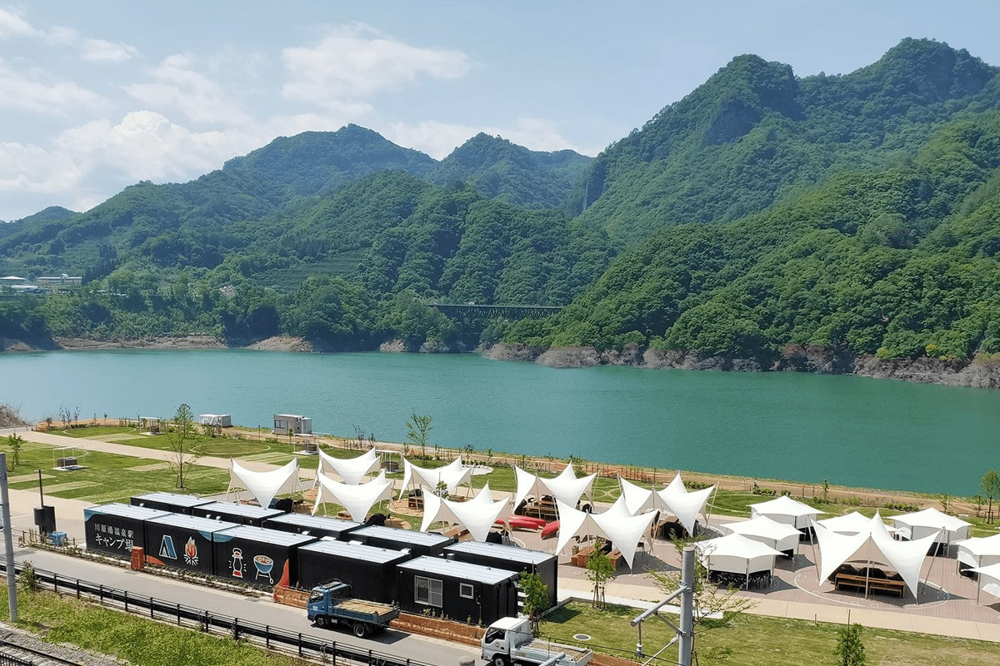
Выйти из поезда, пройти несколько шагов и оказаться в палаточном лагере с горячим источником и видом на озеро. Летом 2020 года у станции Кавараю-онсэн открылись кемпинг и база отдыха NOA, куда можно приехать с пустыми руками.
Кемпинг
С пустыми руками к воде
Онсэн Кавараю лежит в посёлке Наганохара в префектуре Гумма. Весной 2020 года здесь заработала плотина Ямба, новый резервуар воды для всего региона Канто, и над долиной разлилось озеро Ямба-Агацума. Летом того же года у станции Кавараю-онсэн открылись два места для отдыха на природе: кемпинг и база NOA. Станция в двух шагах, у кемпинга свой горячий источник, а из лагеря видно озеро. Такое сочетание редко встретишь даже в Японии.
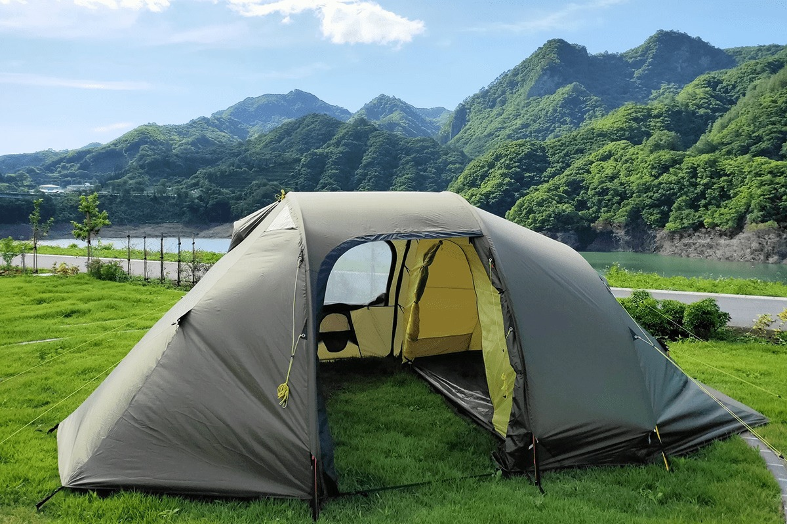
Кемпинг готовили пять с половиной лет. Им занимается команда людей, которые много лет устраивают походы и барбекю «налегке», вместе с местными жителями. Всё нужное снаряжение выдают на месте, поэтому здесь спокойно и опытным туристам, и тем, кто ни разу не ночевал в палатке. На территории проходят занятия для начинающих: как ставить лагерь и как вести себя на природе.
С апреля 2026 года кемпинг работает по выходным и накануне праздников, а место нужно бронировать заранее.
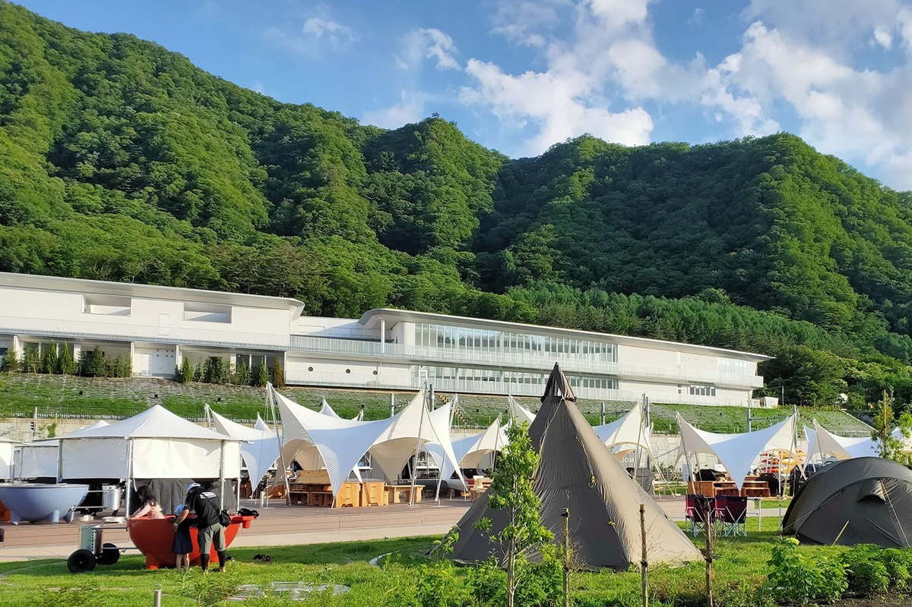
Баня
Бочка на дровах и палаточная сауна
Того, что есть здесь, в других кемпингах почти не найти: в 2020 году в аренду давали баню на дровах и палаточную сауну. Вода в бочке греется около трёх часов. Пока она нагревается, можно посидеть в сауне, потом забраться в горячую бочку, а закончить день в онсэне «Сасаю». Для бани и сауны нужен купальник, его стоит взять с собой.
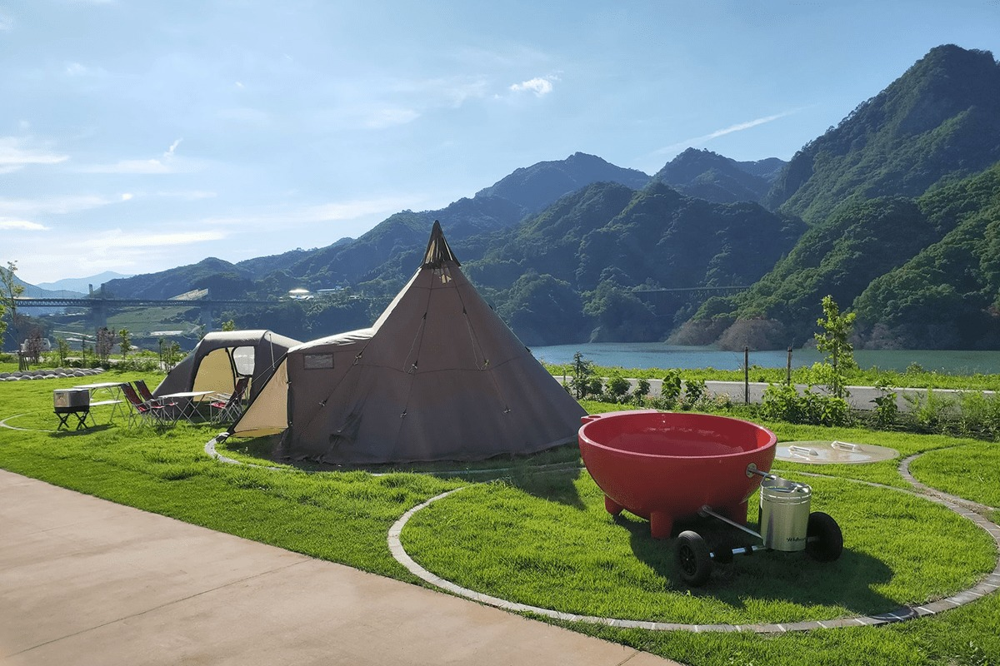
Барбекю
Гриль, о котором мечтают
Здесь поставили настоящий американский гриль для барбекю, а посуды и инструментов столько, что любитель готовить на природе удивится. Среди снаряжения в 2020 году были газовый гриль Weber серии Genesis, двухконфорочная плита Camp Chef Yukon, высокий стол и ящик для специй tent-Mark DESIGNS, кухонные ножи Opinel, холодильная сумка на подставке, голландская печь SOTO, чугунная сковорода LODGE, походные приборы и чайник UNIFLAME, кружки-сиерры, тарелки и миски GSI, кофемолка и кофейник. Многое из этого давно хочется попробовать в деле.
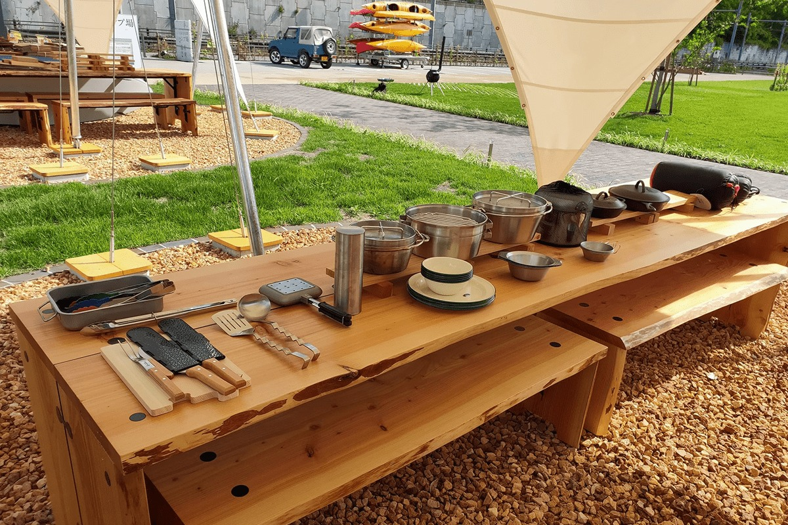
Барбекю из местных продуктов и блюда из голландской печи вкуснее на свежем воздухе. А к ним ледяное разливное пиво из крана кемпинга.
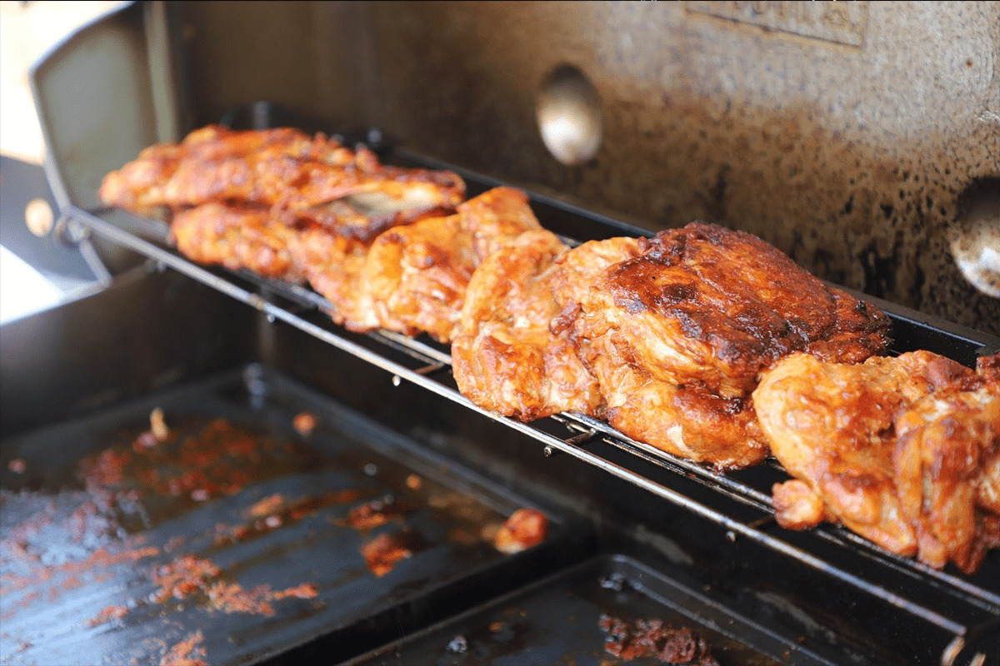
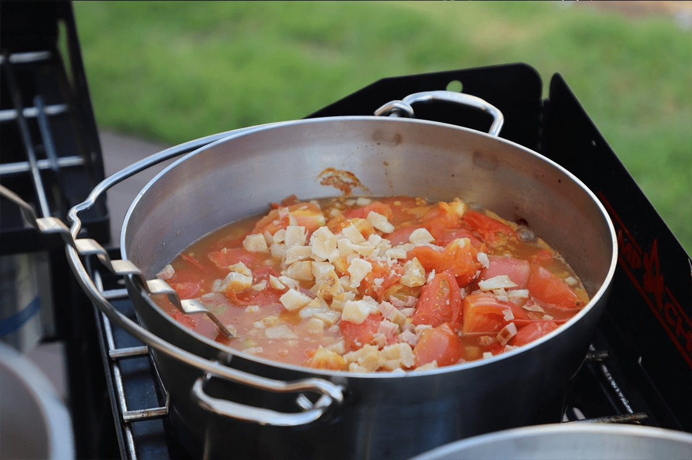
Над площадкой для барбекю натянута крыша, которая спасает от любой погоды. Под ней стоят большие газовые грили и двухконфорочные плиты, а вся посуда и приборы уже на месте. Сюда приезжают с ночёвкой, на барбекю на один день и на закрытые вечеринки, когда площадку снимают целиком.
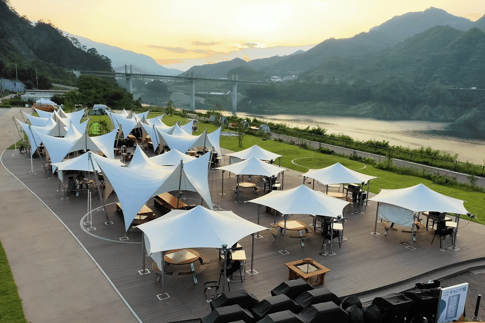
Кафе
«Сасаю кафе» у дровяной печи
На базе NOA работает «Сасаю кафе», где пахнет дровяной печью. В меню в основном продукты из Наганохары, многие блюда долго томятся в кухонной печи на дровах. Сюда приходят посидеть без спешки.
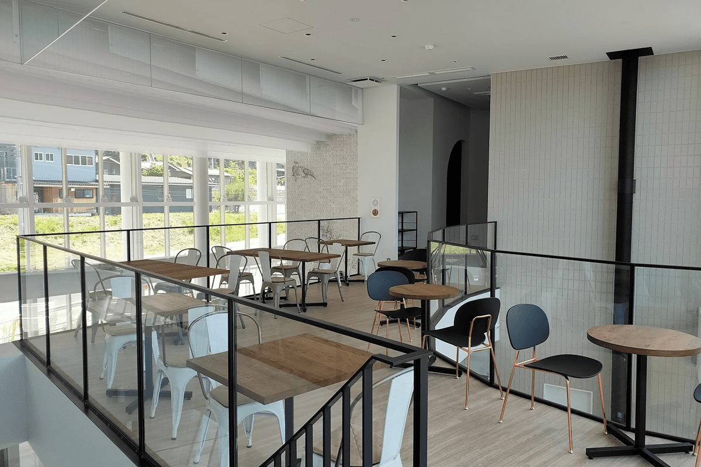
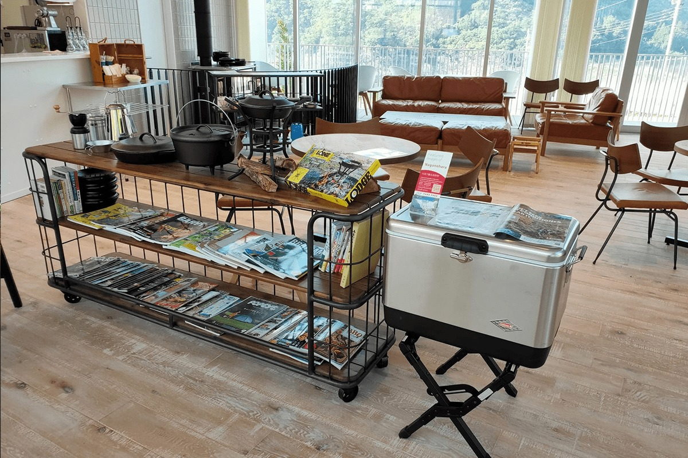
«Сасаю кафе»
- Адрес
- префектура Гумма, уезд Агацума, Наганохара, Кавараю, 223-5
- Часы работы
- 10:30–17:30
Онсэн
«Сасаю»: горячая вода с видом на озеро
Онсэн «Сасаю» тоже находится на базе NOA, и в 2020 году туда пускали только гостей кемпинга и площадки для барбекю. Вода идёт прямо из источника, без разбавления и повторного нагрева. Из окон крытой купальни и из открытой купели видно всё озеро Ямба-Агацума.
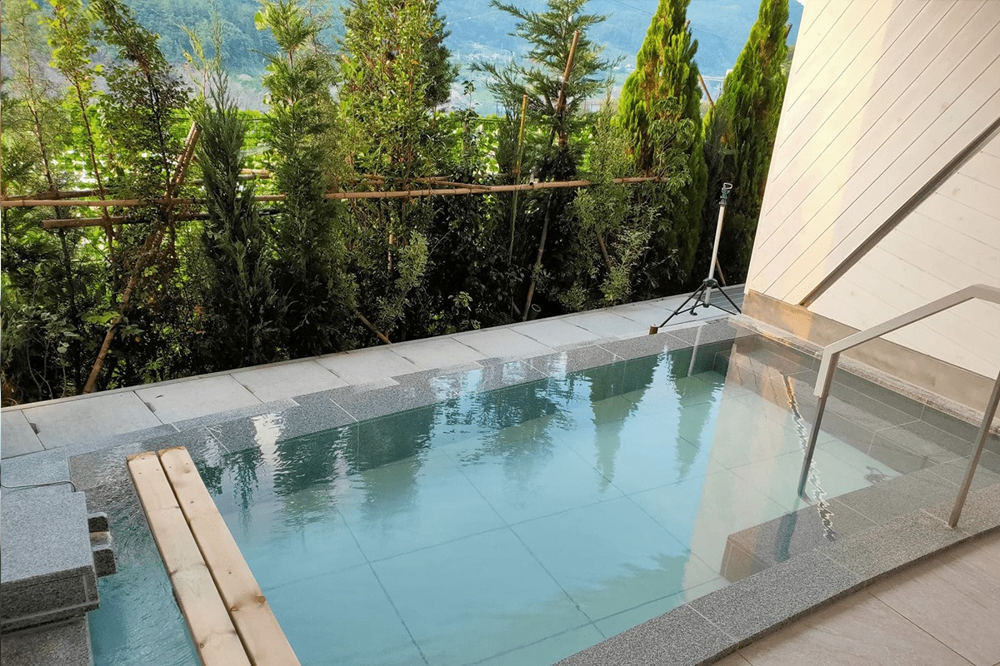
По преданию, источник Кавараю нашёл Ёритомо Минамото (1147–1199), первый сёгун Японии, основатель правительства в Камакуре. Вода с характерным запахом серы, как считается, помогает при ревматизме, болях в суставах, зябкости и порезах. Когда строили плотину Ямба, онсэн перенесли выше, на землю, выделенную взамен затопленной, и здесь вырос новый курортный посёлок. Вода при этом осталась такой же хорошей. Вход в 2020 году стоил 800 иен для взрослых и 400 иен для дошкольников и учеников начальной школы.
Онсэн «Сасаю»
- Адрес
- префектура Гумма, уезд Агацума, Наганохара, Кавараю, 223-5
- Часы работы
- 10:00–20:00 (гостям кемпинга также 8:00–9:00 и 20:00–21:00)
- Цены / Вход
- взрослые 800 иен, дошкольники и ученики начальной школы 400 иен
- Выходные
- иногда закрыт на обслуживание
Озеро
На воду у плотины Ямба
Озеро Ямба-Агацума появилось вместе с плотиной. На просторной воде катаются на каноэ, каяках и сапах, а по берегу проходят поезда линии Агацума: электрички серии 211 и экспресс «Кусацу» серии 651.
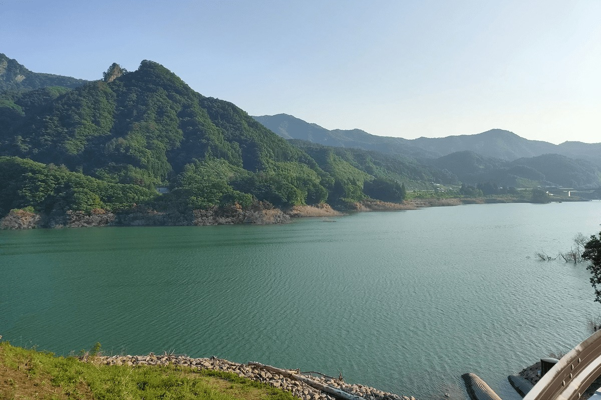
Сапсёрфинг пришёл с Гавайев: на нём стоят на доске и гребут веслом. С подсказками инструктора можно доплыть до противоположного берега у плотины. Оттуда видны следы деревни, ушедшей под воду, водопады, которые срываются с обрывов, и опоры огромного бетонного моста над водохранилищем.
В 2020 году здесь ходил и автобус-амфибия «Ямба Нягатэн», который ездит и по суше, и по воде. Он с брызгами въезжает в озеро и катает пассажиров по водохранилищу, развлечение для детей и взрослых. В отличие от похожих аттракционов в других местах, у проекта есть и другие цели: удобная жизнь на отдалённых островах, перевозка грузов, беспилотное управление судами с помощью систем автопилота для автомобилей. Его создатели хотели стать первыми в мире в этом деле.
Для всех
Если в походе впервые
Здесь есть всё, чего ждёшь от отдыха на природе, и место подходит семьям, друзьям и парам. Хороший вариант, если хочется кемпинга без лишних хлопот.
Кемпинг у станции Кавараю-онсэн
- Адрес
- префектура Гумма, уезд Агацума, Наганохара, Кавараю, 223-5
- Телефон
- +81 90-6942-1223 (9:00–17:00)
- Выходные
- понедельник
- Как добраться
- у станции Кавараю-онсэн линии JR Агацума